|
Cascading Style Sheets |
Color, fonts, layout, and other fun stuff |

In this module you will learn:
- How to utilize color and color schemes.
- How hex color codes work.
- Using CSS to add color, borders, margins, and fonts.
- How to create new blocks and layouts on the page.
- Use external files to hold the CSS code that is common to all the pages on your site.
WII-FM (What's In It - For Me)
My web page is so boring. I want some color. I want a specific page layout. I want specific fonts.
You are going to love CSS!
Complete these Learning Activities:
Total estimated time to complete these Learning Activities: 7 hours.
Write down a brief description of what you plan to do for your website. The end result for this course is to have your own web site. It is recommended that you create an personal portfolio/resume for yourself but you are free to create a site on whatever subject or organization that you would like.
Here is an example that one of your instructor's has created: Peter Johnson
As you complete these learning activities start designing your website. Write down ideas you might want to use. (Include the URL or web address of the example site if you have it!)
- The color scheme for your site.
- What will the page layout look like?
- What are 2-3 things you want to show? (For example: resume, blog, hobbies)
- What information/photos will go in the header?
- What information/photos will go in the footer?
Here is an example of a layout file used with clients to document the design items for a project. Click on each image for a larger view.
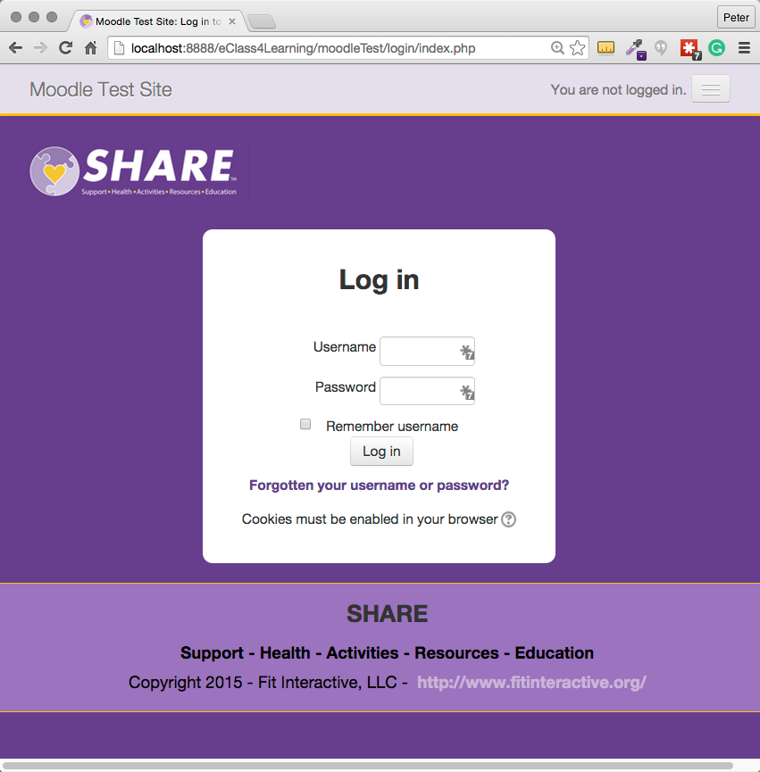 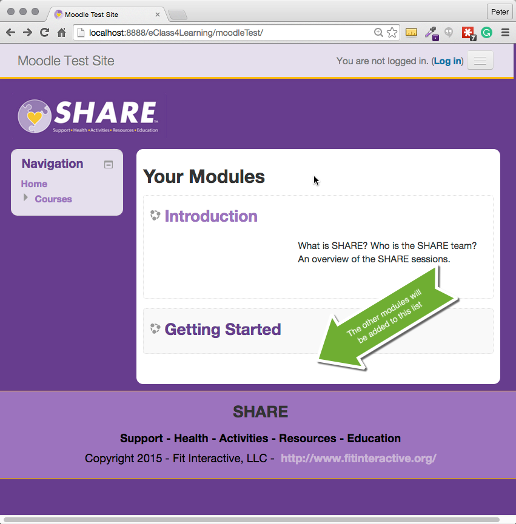 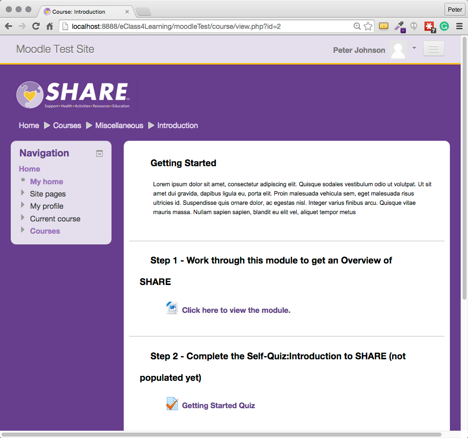
Right-mouse click on the web page in a browser and select "View Source" to see how inline CSS was used for the color swatches. (If you print out the page you have to turn background printing on to get the color swatches to print. Firefox and Safari will do this. Chrome will not.)
Estimated Time: 5 minutes or less.
Write down a brief description of what you plan to do for your website.
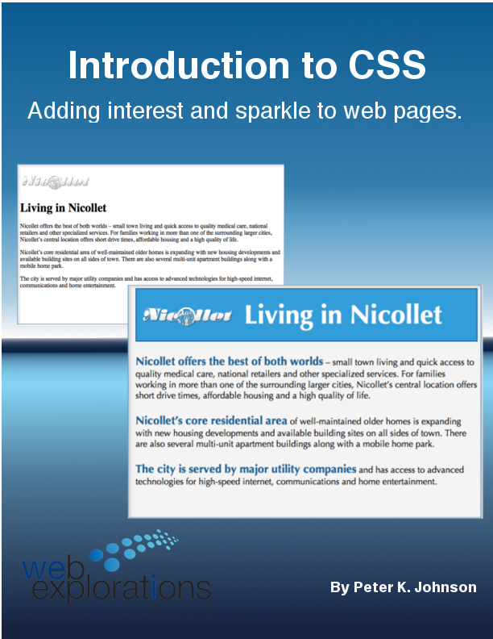
Go from plain to interesting by learning how to:
- Add color to the page
- Change fonts
- Add borders and change margins
- Float images next to text
Source code for Nicollet Web Site - introCSSCode.zip
Estimated Time: 60 minutes
Work through Tutorial:CSS Introduction.
CSS not working?. Go through the expert checklist on page 119 of the textbook. This will fix almost 90% of your errors (and greatly reduce your frustration with learning a new styling language.)
Photo from flickr.com by TschiAe
CSS not working?. Go through the expert checklist on page 119 of the textbook.
Take the Self-Quiz: CSS. You can take the self-quizzes as many times as you like.
Be smart and take the self-quiz once each day to learn the material.
Estimated Time: 10 minutes (probably a lot less) each time you take a self-quiz.
Take the Self-Quiz: CSS.
Read chapter 3 & 4 of Basics of Web Design HTML5 and CSS3.

- How to apply design concepts to web pages.
- What different layouts can I use?
- How does my page look on a mobile phone?
- Protocols? What's that?
- What's a div? What's a span?
- Using CSS to add color, fonts, and other cool stuff
Estimated Time: 1 hour
Read chapter 3 & 4 of Basics of Web Design HTML5 and CSS3.
Read through this Tutorial: An Introduction to Color Theory for Web Designers.
Look at the examples in this article from Smashing Magazine: The Meaning of Color.
Estimated Time: 30 minutes
Read through this Tutorial: An Introduction to Color Theory for Web Designers
Look at the examples in this article from Smashing Magazine: The Meaning of Color.
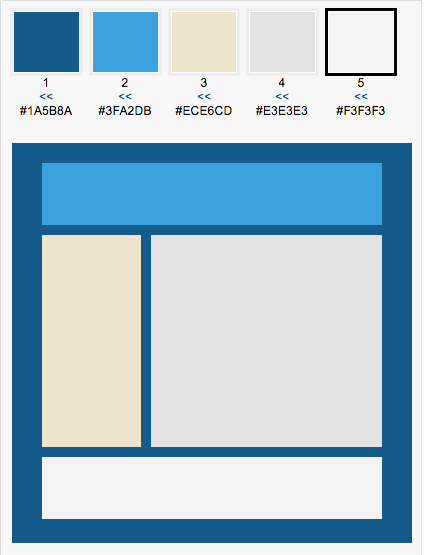
Notes:
- You have to register on the Kuler site to be able to color match a photo as she does in the tutorial.
- Pay attention to the sections, "The Easiest Color Schemes" and "10 Sites with Great Color Schemes".
Here is a page with 20 Color Scheme Generators you can use. (ColorWizard has been popular with students. Color Hunter is useful if you have a logo or photo that you want to match your site.)
Estimated Time: 1 hour
Using this Smashing Magazine tutorial:Tutorial:HTML develop a color scheme you want to use for your own site.
Watch this quick demonstration video showing how additive colors work.
- What color does the ping pong ball appear to be when the blue light hits it?
- What color does the ping pong ball appear to be when the red light is added?
- What color does the ping pong ball appear to be when the green light is added?
- If you were painting (subtractive color) the ping pong ball what color would it be if you mixed in blue and red?
- How about if you mixed blue, red, and green? Would you get white or another color?
- Does a computer monitor or mobile phone use additive or subtractive color?
Watch this quick demonstration video showing how additive colors work.
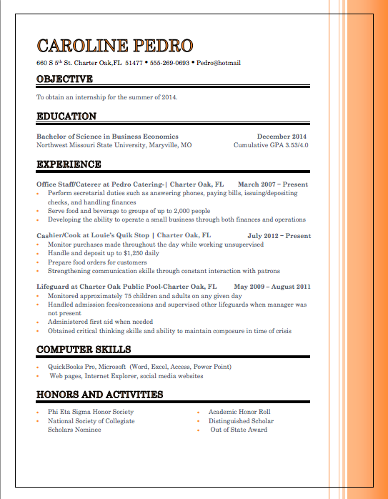
Here are some examples of what you can do with your resume while still appearing very professional.
Estimated Time: 5 minutes
Add color to your resume/portfolio design to make it stand out. Examples: examples of what you can do with your resume.
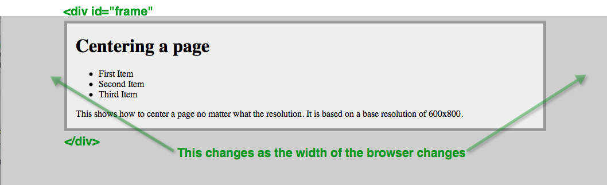
Here's how to set up a web page so it will work on every browser no matter what resolution it is.
The trick is to set up a <div> element with an id="frame" and set this to max-width: 800px; using CSS.
Set the margins to auto to automatically center this 'frame' on the page. Here is an example showing how to center things with <div> and CSS.
Right-mouse click on the web page and select "View Source" to see the code.
Estimated Time: 30 minutes
Use the <div> element to center your page on any monitor. Example code showing how to center things with <div> and CSS.
OPTIONAL: Read this PDF article, 'The Eye of the Beholder' - Designing for Colour-Blind Users
Focus on:
(1) The graphics to see how different a page can look to people with different types of color blindness.
(2) The two bulleted items on page 5 and 6 and use these when you are choosing colors for a web page.
Estimated Time: 10 minutes
OPTIONAL: Read this PDF article, 'The Eye of the Beholder' - Designing for Colour-Blind Users.
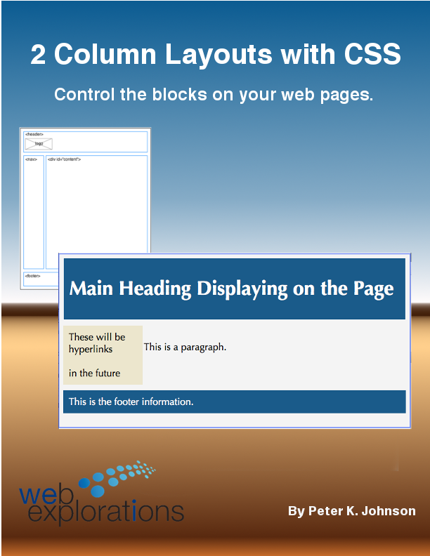
This hands-on lab. When you have finished the lab you will have a fluid 2-column template that you can use in the future to build new web pages.
Save the finished file in the same folder as your basic HTML template that you created earlier in the course so you can find it easily and quickly.
This tutorial will also show you how to use the <div> element to mark out sections on a page that can be customized with their own CSS rules. Keep in mind that HTML5 includes the new elements for <header>, <footer>, and <nav> so you don't have to set up ids for these.
Here are the START and FINAL .html files, 2colLayoutDemo.html.zip that you can use.
Estimated Time: 1 hour
Complete the tutorial: 2-col CSS Layout.
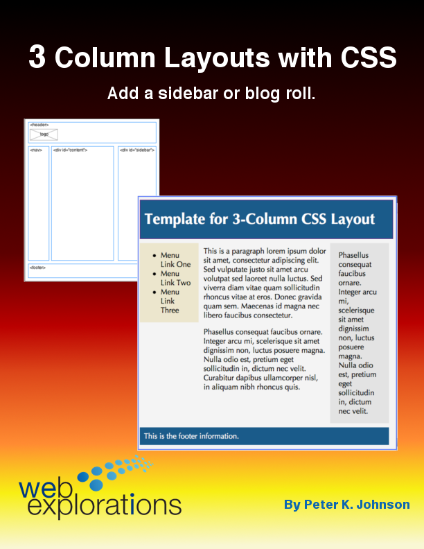
This lab builds on what you learned in the 2-column layout. Use that template to build your very own 3-column template.
Save the finished file in the same folder as your basic HTML template that you created earlier in the course so you can find it easily and quickly.
Estimated Time: 30 minutes.
Complete the tutorial: 3-col CSS Layout.
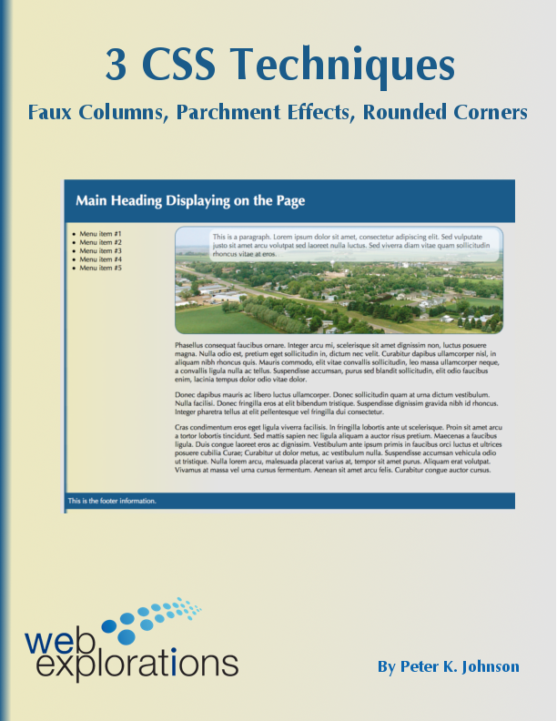
A common problem is having text on top of a graphic. It is almost impossible to read. This tutorial will show you how to use transparency to create a parchment effect giving the text on a page a background so it is readable. This also gives the web page a more 3D, layered look.
Here are the START .html files as well as the graphic images that are used in this tutorial, techniqueCSSResource.zip
Estimated Time: 15 minutes.
Complete the Tutorial: 3 CSS Techniques - Faux columns, parchment effect, and rounded corners.
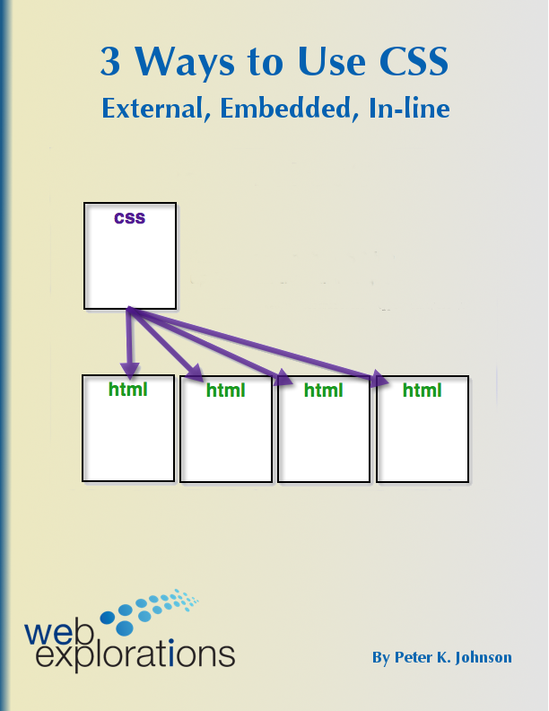
Learn how to use external style sheets, embedded styles (like you have been doing all along), and in-lines CSS for styling specific elements.
Estimated Time: 30 minutes.
Complete the Tutorial: 3 Ways to Use CSS - External, Embedded, In-Line.
Your Graded Assignments For This Module
 Stop!
Stop!
Don't frustrate yourself. Do the Learning Activities BEFORE starting these graded activities.
Ask yourself, "Am I here to learn something I can use... or to just finish the course and get a grade?"
Take the Graded Quiz: HTML
- There will be 10 true/false and multiple choice questions.
- 10 questions - 10 minutes - 10 points
- Feel free to use your book or look stuff up on the Web or try things out on your computer.
- You will have one chance to take the quiz.
- The questions will be from the same database that the self-quiz uses.
- The quiz will be scored automatically and your points shown in your D2L grade book.
Estimated Time: 10 minutes
Look on the Course Map for the due date for this graded activity.
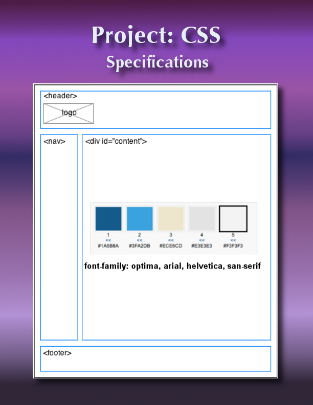
Complete the Project: CSS.
Using your resume web page you will show your CSS expertise by:
- Adding color, borders, and margins to web pages
- Using external, embedded, and in-line CSS code
- Using <div> and <span> elements along with the naming attributes: id=" " and class=" "
- Formatting web pages into 2-column and 3-column layouts
Look on the Course Map for the due date for this graded activity.

Your Tip-Of-The-Week
(Click on the lightbulb to reveal the tip.)
Make Shapes with CSS
Chris Coyier loves CSS. Here is a page showing how you can use CSS to create a myriad of shapes for your web pages.
Here is a triangle using in-line CSS:
To see the code for the other shapes on the page:
- Right-mouse click on the css-tricks page
- Select "View Source"
- Use CTRL F (find) to locate the ShapesOfCSS.css file
- Notice how each shape has its own unique id "#"
- Copy the code you want and add it to your page
What's Next?
Time to get your page(s) published. FTP will help you copy your files out to the server so the rest of the world can view them. Bouncing Bees!